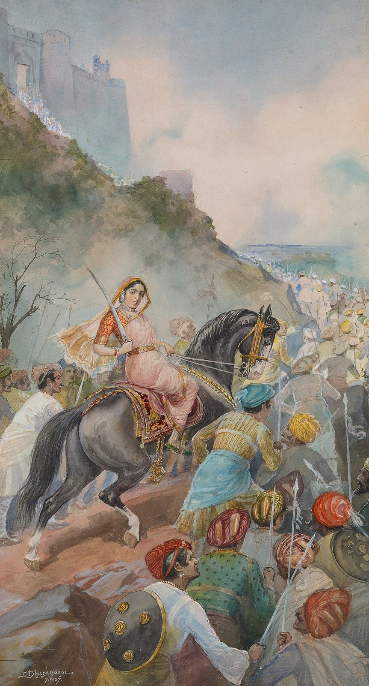

Tarabai
Rajaram’s widow, regent from 1700, who held the Maratha war together through Aurangzeb’s last years and founded the rival court at Kolhapur.

Tarabai (1675–1761), daughter of the Maratha general Hambirrao Mohite, married Rajaram in 1682. When he died at Sinhagad in March 1700 she proclaimed their infant son Shivaji II king and took the regency herself. For the next seven years she directed the war against Aurangzeb from the hill forts of the western Deccan, the final phase of what Marathi tradition calls the war of twenty-seven years (1680–1707).
Her method was her husband’s, pursued with more energy. Rather than defend forts, which the Mughals could always buy or batter, Maratha horse raided deep into imperial territory – Khandesh, Berar, Gujarat and, by 1705, across the Narmada into Malwa – collecting chauth and leaving Aurangzeb’s army to retake, at great cost, forts that would be lost again. The Mughal chronicler Khafi Khan remarked on her personal direction of affairs. The emperor died at Ahmadnagar in March 1707 with nothing settled, and his son Azam Shah, needing to divide the Marathas, released Sambhaji’s son Shahu from the imperial camp. Shahu defeated Tarabai’s forces at Khed in October 1707 and was crowned at Satara in January 1708. She withdrew to Kolhapur and set up a rival Chhatrapati there in 1710; in 1714 a palace coup by Rajaram’s other widow, Rajasabai, deposed her son and confined her.
Tarabai outlived nearly everyone. Reconciled with Shahu in 1730, she lived at Satara, and in the 1740s produced a grandson, Ramraja, whom the childless Shahu named heir. After Shahu died in 1749 she tried to rule through the boy, fell out with him, imprisoned him and denounced him as an impostor, and then came to terms with the Peshwa Balaji Bajirao in September 1752. She died on 9 December 1761, a few months after Panipat. Her career spans the whole of the Maratha century: she began it fighting an emperor and ended it as a relic at a court run by Brahmin ministers.
In the story
Tarabai marks the point at which the Maratha kingdom stopped depending on a single ruler. Through a widow’s regency the state carried on a war its founders had started, and when the Mughals released a rival heir the result was two Chhatrapatis, at Satara and Kolhapur, both claiming Shivaji’s inheritance. That division, never fully healed, is one reason the real power of the Marathas passed from kings to ministers and generals.
In the map collection
Chatelain, Carte nouvelle des terres de Cucan, de Canara, de Malabar, de Madura (1719)
In the chronology
- 1700–1707Rajaram dies in 1700; Tarabai governs in the name of her young son and sustains the anti-Mughal war.
Sources
- Richard M. Eaton, ‘Tarabai (1675–1761): The Rise of Brahmins in Politics’, in A Social History of the Deccan, 1300–1761 (Cambridge University Press, 2005)
- Stewart Gordon, The Marathas 1600–1818 (The New Cambridge History of India, II.4) (Cambridge University Press, 1993)
- Shalini Patil, Maharani Tarabai of Kolhapur, c. 1675–1761 (S. Chand, New Delhi, 1987)